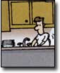
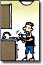
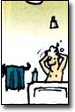
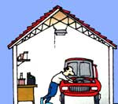

Household recipe books served as homemaking survival guides in the old days. Often passed on from mothers to daughters, these well-thumbed volumes told readers how to make everything from scrambled eggs to laundry-stain remover, bath soap and house paint. Based on herbal lore, the household and personal-care recipes of yesterday mostly relied on natural ingredients found in everyone's kitchen cupboard, garden or nearby field. Today, they still can provide safe, effective and inexpensive alternatives to the mostly chemical-based products that line our supermarket shelves.
In 1980, I was exposed to a gas leak at work and then, one month later, an insecticide that has since been taken off the market because of its toxicity was used by exterminators on my apartment build ing. After this one-two punch to my central nervous system, I became supersensitive to environmental chemicals, and began to research the startling extent to which chemicals are used in commercial cleaning and personal products - from hair spray and floor wax to dandelion killers and shower curtains. Many everyday products contain ingredients that cause environmental pollution that damages the ozone layer, disrupts wildlife's hormones and increases our risks of cancer and central nervous system disorders.
In the natural world, though, we can find an astonishing abundance of safe ingredients to make alternative products, many of which can be traced to the old recipe books. In my book, Better Basics for the Home, (available on Mother's Bookshelf, Page 118), I have retrieved some of the old-time know-how that was abandoned with the arrival of the chemical age. If we can establish healthier homes, we'll go a long way toward establishing a healthier planet. By using our own recipes or purchasing less-toxic commercially made products, we can simplify our lives, feel empowered by our "potions" and save ourselves a bundle of money over time.
And yes, these less-toxic products really do work because they're based on simple chemistry: folk recipes were predicated on the pH scale of acid and alkaline. On this scale, 7 is neutral; anything greater than 7 is alkaline (examples include baking soda, washing soda, borax and lye) and anything less than 7 is acidic (including vinegar and lemon juice). Alkaline substances are effective cleaners of acidic materials, and acidic substances clean alkalines.
My daughter learned about acids and alkalines in third grade in an easy way, and you can try this, too: Simply cut a red cabbage into wedges and boil in just enough water to cover. Let cool, then strain the juice into a jar. Cabbage juice has a neutral pH - when added to acids, it turns pink; when added to alkalines, it turns yellowish green. If you want to neutralize an odor or a stain but don't know its pH, try this test, then use an alkaline cleaner on acidic stains and an acidic cleaner on alkaline stains.
To help you get started with your own less-toxic cleaners, turn to Page 86 for a selection of recipes. The recipe ingredients can be found in grocery, drug and health food stores.
Adapted from Better Basics for the Home by Annie Berthold-Bond, © 1999 by Annie Berthold-Bond. Used by permission of Three Rivers Press, a division of Random House, Inc.
With five ingredients - baking soda, washing soda, liquid soap or detergent, distilled vinegar and an antiseptic essential oil - you can clean everything in your house.
Baking Soda and Washing Soda. The magic of these minerals is that they neutralize many stains and odors. They are alkaline, cut grease and can even dissolve wax. Baking soda also serves as a mild abrasive. Washing soda is the best heavy-duty scourer, but it is slightly caustic, so you need to wear gloves when using it.
Liquid Soap or Detergent. Soap is better for your health and the environment than detergents, but because water reacts with minerals in soap, washing clothes with it can leave an insoluble film and turn clothes grayish. If you wash your clothes with detergent, select the most biodegradable brand.
Vinegar and Essential Oils. Vinegar neutralizes many stains and odors, dissolves scale and pulls dirt out of wood. Use only white distilled vinegar for cleaning; apple cider vinegar could stain some materials, such as upholstery. Antiseptic essential oils - such as tea tree, sweet orange, lemon-grass, rose, clove, eucalyptus, cinnamon, birch or lavender - kill bacteria and mold.
Be a cleaning machine...
Soap for Sparkling Dishes
This cleaner works well except in hard water, where it can cause soap scum.
1 ounce liquid castile soap
2 cups water
1 teaspoon vegetable glycerin
5 to 10 drops lavender essential oil (optional, but lavender is antibacterial)
Combine the soap and water in a jar. Add the glycerin and lavender (if using). Stir to blend. Pour some on a sponge, or add a few teaspoons to a sink full of warm water.
Soap Scum-fighting Spray
1 teaspoon borax
1/2 teaspoon liquid detergent
1/4 cup white distilled vinegar
2 cups hot water
Combine the ingredients in a spray bottle, and shake to blend. Spray. Follow with a sponge. Rinse. Makes 2 1/4 cups.
Gentle-but-effective Scrub I use this effective formula on Formica countertops, sinks, the bathtub and the shower stall.
1/2 cup baking soda
Enough liquid soap or detergent to make a frostinglike consistency
5 to 10 drops essential oils, such as rose or lavender (optional)
Place the baking soda in a bowl; slowly pour in the liquid soap, stirring all the while, until the cleaner has a frostinglike consistency. If you're using any essential oils, be sure to add them last. Scoop the creamy mixture onto a sponge, wash the surface well and rinse. Makes 1/2 cup.
Floor Shine You can use this preparation on all floors except when directed by the manufacturer to avoid even mild detergents.
1/4 cup liquid soap or detergent
Up to 1/2 cup white distilled vinegar or lemon juice
2 gallons warm water
Combine the ingredients in a large plastic bucket. Use with a mop or sponge. Makes about 2 gallons.
Club Soda Linoleum Spray The alkaline minerals in club soda work wonders against dirt.
2 cups club soda
Pour the club soda into a spray bottle, spray onto linoleum and mop dry. Makes 2 cups.
Magic Window Wash
1/4 cup white distilled vinegar
1/2 teaspoon liquid soap or detergent
2 cups water
A few drops of essential oils, for scent (optional)
Combine the ingredients in a spray bottle and shake to blend. Spray on surface, then remove with a squeegee, paper towel or newspaper. Makes 2 1/4 cups.
Toilet Bowl Tidy-up
1/4 cup white distilled vinegar
2 cups water
Vinegar is an, underused but effective disinfectant. Combine the ingredients in a spray bottle, shake and spray along the inside rim of the toilet. Leave on for 15 minutes and then scrub with a toilet brush. Makes 2 1/4 cups.
Baking Soda Oven Cleaner Baking soda has never failed me for oven cleaning. Even heavy grime lifts off with this formula.
Small- to medium-sized box of baking soda
Water
Sprinkle the bottom of the oven with baking soda to cover. Spray with water until very damp, and keep moist by spraying every few hours.
Let set overnight. In the morning, simply scoop out the baking soda - all the grime will be loosened - and rinse the oven well. Baking soda needs a lot of rinsing, but it is well worth the effort because it produces no toxic fumes. For really tough jobs, substitute washing soda for half the baking soda.
Balk at Using Standard Bleach The active ingredient in most household bleach is sodium hypochlorite, a moderately toxic chlorine salt. In the wastewater stream, household bleach also can bond with other chemicals to form cancer-causing organochlorines.
Seventh Generation's brand offers an effective alternative; you can find their non-chlorine bleach in health food stores and some supermarkets.
Drain Cleaner Blues
Many commercial drain cleaners are very caustic. Some are nothing more than straight lye, a dangerous material you don't want in your home, especially if you have easily damaged PVC pipes.
Other drain cleaners are acids. All seem to be bad news for the wastewater stream. The efficacy of drain cleaners is in doubt, too, according to Consumer Reports. So, instead of resorting to chemicals, grab a plunger or a plumber's snake, and unclog your drains by hand. And to keep drains clean, pour 1 cup washing soda down them every week or so.
Paste for Your Pearlies
4 ounces calcium carbonate (chalk)
2 ounces baking soda
Enough glycerin to make a paste
1/8 teaspoon refined (white) stevia or 1 teaspoon honey
10 drops essential oils, such as oil of wintergreen or peppermint
Combine the ingredients in a bowl, stirring vigorously until well blended. Scoop the paste onto a toothbrush with a knife or spoon. Makes 3/4 cup.
Among commercial products, Tom's of Maine has one of the best natural formulations, with a synthetic detergent, sodium lauryl sulfate, derived from coconut, not petroleum. The Natural Dentist and Weleda brand toothpastes are made with herbs and no sodium lauryl sulfate.
Cool Cleaner for Your Curls
10 ounces water
1 to 2 ounces liquid castile soap (the less the better)
1 teaspoon glycerin or 1/4 teaspoon mild oil, such as olive or almond oil
20 to 35 drops essential oils (optional)
Make the herbal water infusion by putting a handful of herbs in a pint mason jar and immersing them in boiling water. Cover tightly, let set overnight; strain. Add the soap, glycerin and essential oil (if using); cover and shake to blend. Shampoo as usual. Makes 1 1/2 cups. Caution: Essential oils can harm the eyes, so be sure not to get shampoos, rinses or conditioners in your eyes, and add no more than 3 drops of essential oil per ounce of base. Among commercial shampoos, Aubrey Organics, Logona and Real Purity are good brands.
Astringent Water Fit for a Queen
Gypsies first formulated this wonderful astringent, called "Queen of Hungary Water," for use primarily as a medicinal remedy; the recipe appears in many old herbals, using a variety of herbs. I have often made a version, originated by noted herbalist Rosemary Gladstar, for Christmas gifts, bottling it in beautifully shaped blue glass. Here is my favorite adaptation of the recipe; it omits chamomile (because so many people are allergic to ragweed, to which chamomile is related) and increases the amount of calendula. Feel free to adapt the recipe to suit your own skin type and preferences.
6 small handfuls fresh lemon balm leaves
5 small handfuls calendula flowers
4 small handfuls rose petals
3 small handfuls fresh comfrey leaves
1 small handful each rosemary, lemon peel and sage
Organic apple cider, as needed
Rose water or witch hazel, as needed
Place the herbs in a 1-gallon glass jar. Cover the herbs with organic apple cider vinegar, leaving about 2 inches to spare in the jar. Screw the lid on tightly. Let it set for four to six weeks. Strain. Divide the mixture into smaller jars, and dilute to half its strength with rose water or witch hazel extract.
Sesame-spiked Sunblock
Sesame oil is a natural sunscreen, and zinc oxide protects against UVA and UVB radiation. Apply this block every hour or so when you're out-of-doors, and reapply after swimming.
2 1/2 ounces sesame oil
1 1/2 ounces coconut oil or cocoa butter
4 ounces water or strong green tea made with distilled water
1/2 ounce beeswax
2 tablespoons zinc oxide
Natural preservative (see "Dreamy, Creamy Lotion" formula)
10 to 20 drops antiseptic essential oils (optional)
Melt the oils and beeswax in a double boiler over medium heat. Remove from heat, add water and mix with an electric handheld mixer until thick and creamy. Add the zinc oxide and preservatives, followed by the essential oil (if using). Blend well. Makes 1 cup. (Reserve the double boiler and the handheld mixer especially for making these preparations.)
Dreamy, Creamy Lotion
Many commercial lotions have high amounts of alcohol, which can dry your skin and make the use of heavy creams necessary. Homemade lotions without alcohol eliminate that problem and offer a pleasant change.
2 1/2 ounces almond, olive or peanut oil (or a combination)
1 1/2 ounces coconut oil ounce beeswax
2 ounces aloe vera gel
2 ounces water or rose water
1 tablespoon glycerin
Natural preservative (1 teaspoon vitamin C powder, 1/4 teaspoon vitamin A powder and 1 tablespoon wheat germ oil or 1/3 teaspoon grapefruit seed extract)
10 to 25 drops fragrant essential oils, if desired
1 teaspoon borax (optional)
Melt the oils and beeswax over medium heat in a double boiler. Remove from the heat, pour in the aloe vera gel, water, glycerin, preservative and fragrance (if using), and stir with a mixer until thick and creamy. For a thinner lotion, slightly decrease the beeswax. (You can add 1 teaspoon borax, too.) Makes 1 cup. Whiskers-be-gone Shaving Cream
Whiskers-be-gone Shaving Cream
2 ounces almond oil
1/2 ounce beeswax
4 ounces water
2 ounces liquid Castile soap
1 ounce glycerin
1 teaspoon borax
1/3 teaspoon grapefruit seed extract
20 drops essential oils
Combine the oil and beeswax in a double boiler over medium heat. When the beeswax is melted, remove from the heat and stir in water, soap, glycerin and borax. Blend with an electric handheld beater until creamy. Add the grapefruit seed extract and essential oils, and stir to blend. Makes 1 cup.
Safe care for your car...
Car Battery Cleaner
Baking soda
Water
Sprinkle baking soda on battery terminals to neutralize the battery acid. Spritz with water to dampen. Let set for an hour or so, then sponge off the baking soda with water. Air-dry.
The `Good' Antifreeze
A less-toxic antifreeze than the commonly used ethylene glycol is available and sold by automotive supply stores. The "good" kind is made of propylene glycol, which is safe enough to be used as a food additive; ethylene glycol is so toxic it's a household hazardous waste.
Here's an additional caution regarding ethylene glycol: If you have a septic system, do not pour ethylene glycol down the drain. If you are on municipal water, dilute this antifreeze before pouring it down the drain or, better yet, save it for your community's household hazardous waste pickup day. Some service stations recycle this antifreeze, too.
Bring home the best brands...
At times, all of us need to buys readymade household cleaning product; following are a few recommendations for commercial products that work effectively and are considered environmentally safe. This listing is based on my 20 years of learning to live without toxins by reading labels and studying reports from reputable organizations. A primary resource is Green Seal [(202) 872-6400; www.greenseal.org ], a nonprofit organization that gives a "seal of approval" to products that meet its high standards. Carefully choosing the safest commercially available cleaning products to supplement homemade cleaners considerably reduces the use of toxic cleaners in our homes. You can find these products in health food stores, some supermarkets and online.
-Annie Berthold-Bond
All-purpose Cleaners Dr. Bronner's Peppermint Pure Castile Soap Seventh Generation
Carpet Cleaners Granny's Old Fashioned Products and Infinity Heavenly Horsetail liquid detergents
Floor Cleaners Infinity Heavenly Horsetail Life Tree Home Soap Murphy Oil Soap Sodasan All-purpose Cleaner
Disinfectants Power Herbal Disinfectant and Deodorizer
Automatic Dish Detergents Life Tree Seventh Generation
Bleach Seventh Generation
Hand Dish-washing Soap Ecover
Laundry Products Earth Friendly Products Ecover Life Tree Seventh Generation
|
|
 |
|
|
|
 |
 |
|
|
 |
|